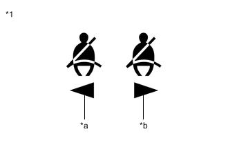

PROCEDURE
INSPECT DRIVER SEAT BELT WARNING SYSTEM
Tech Tips
The seat belt warning light on the combination meter assembly is used for both the driver seat and front passenger seat.
Turn the power switch on (IG).
When the driver seat belt is not fastened, check that the seat belt warning light on the combination meter assembly blinks.
Lift up the vehicle using a swing arm type lift.
Turn the power switch on (READY).
When the driver seat belt is not fastened and the vehicle is driven at approximately 20 km/h (12 mph) or more, check that the seat belt warning light on the combination meter assembly blinks at an interval of 1.2 seconds for 30 seconds.
After that, check that the seat belt warning light on the combination meter assembly blinks at an interval of 0.4 seconds.
When the driver seat belt is fastened, check that the seat belt warning light on the combination meter assembly turns off.
INSPECT FRONT PASSENGER SEAT BELT WARNING SYSTEM
Tech Tips
The seat belt warning light on the combination meter assembly is used for both the driver seat and front passenger seat.
Turn the power switch on (IG).
Place a weight of 20 kg (44.0 lb) on the front passenger seat.
Note
Place the weight on the seat cushion and do not allow it to come into contact with the seatback.
Fasten the driver seat belt.
When the front passenger seat belt is not fastened, check that the seat belt warning light on the combination meter assembly blinks.
Lift the vehicle using a swing arm type lift.
Turn the power switch on (READY).
When the front passenger seat is occupied, the front passenger seat belt is not fastened and the vehicle is driven at approximately 20 km/h (12 mph) or more, check that the seat belt warning light on the combination meter assembly blinks at an interval of 1.2 seconds for 30 seconds.
After that, check that the seat belt warning light on the combination meter assembly blinks at an interval of 0.4 seconds.
INSPECT REAR SEAT BELT WARNING LIGHT

| *1 | Rear Seat Belt Warning Light (Combination Meter Assembly) |
| *a | LH |
| *b | RH |
Check the state of the rear seat belt warning light on the combination meter assembly:
Turn the power switch off.
Open and then close either rear door.
Turn the power switch on (IG).
When a rear seat belt is not fastened, check that the rear seat belt warning light on the combination meter assembly is illuminated.
After 34 seconds, check that the rear seat belt warning light on the combination meter assembly turns off.
When one of the rear seat belts is unfastened from being fastened, check that the rear seat belt warning light on the combination meter assembly illuminates.
INSPECT SEAT BELT WARNING BUZZER
Tech Tips
The seat belt warning buzzer can be customized. Make sure that this function is ON.
Place a weight of 20 kg (44.0 lb) on the front passenger seat.
Note
Place the weight on the seat cushion and do not allow it to come into contact with the seatback.
Lift the vehicle using a swing arm type lift.
Turn the power switch on (READY).
Check that the seat belt warning buzzer in the combination meter assembly sounds at an interval of 1.2 seconds for 30 seconds.
After the seat belt warning buzzer has been sounding for 30 seconds at an interval of 1.2 seconds, check that the seat belt warning buzzer in the combination meter assembly sounds at an interval of 0.4 seconds for 90 seconds.
Check that the seat belt warning buzzer in the combination meter assembly stops 2 minutes after it started sounding at an interval of 1.2 seconds.
After the buzzer has stopped, turn the power switch off and then start the hybrid control system again. Drive the vehicle at approximately 20 km/h (12 mph) or more while the driver, front passenger or a rear seat belt is not fastened, and check that the buzzer sounds again.
After the buzzer has stopped, fasten the driver, front passenger or rear seat belt. Drive the vehicle at approximately 20 km/h (12 mph) or more, unfasten the driver, front passenger or a rear seat belt and check that the buzzer sounds again.
After the buzzer has stopped, stop the vehicle, change the shift state to reverse (R) and then select drive (D). Drive the vehicle at approximately 20 km/h (12 mph) or more, and check that the buzzer sounds again.